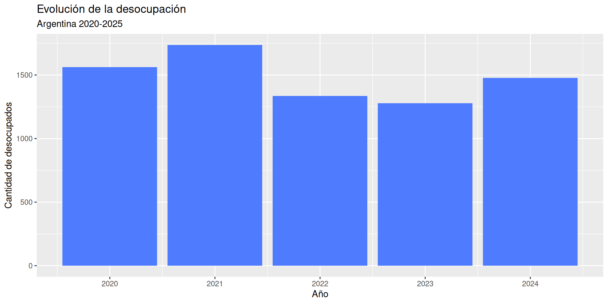
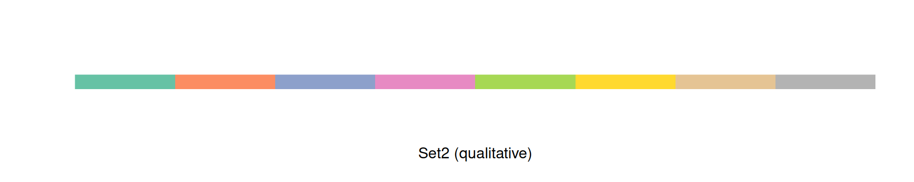
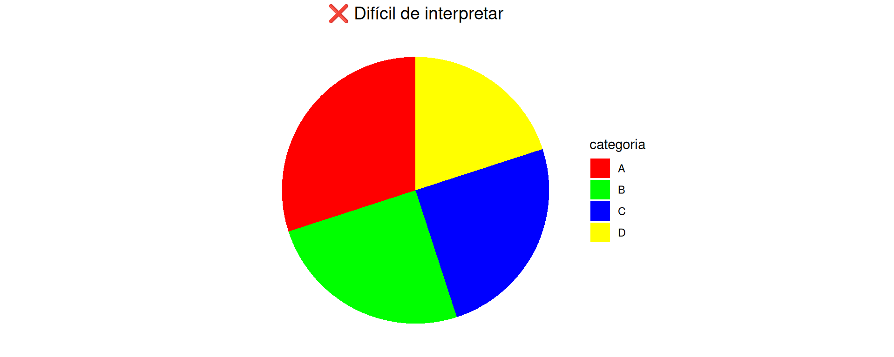

ggplot(tbl_desocup_2020_25,
aes(x = Anio, y = n)) +
geom_col(fill = "#4F7CFF") +
labs(
title = "Evolución de la desocupación",
subtitle = "Argentina 2020-2025",
x = "Año",
y = "Cantidad de desocupados"
)
Encuentro 2: Diseño y estética
2025-09-04
ggplot(data, aes(x, y)) + geom_*()aes()) y fijación de parámetrostitle: Título principalsubtitle: Subtítulox, y: Etiquetas de ejescaption: Pie de gráficofill, color: Etiquetas de leyendaControlan ejes X e Y
scale_x_continuous(): númerosscale_y_discrete(): categoríasscale_x_date(): fechasscale_y_log10(): transformacionesMapeo: aes(x = variable, y = variable)
Controlan colores, formas, tamaños
scale_fill_manual(): colores de rellenoscale_color_brewer(): colores de líneas/puntosscale_size_continuous(): tamañosscale_shape_discrete(): formasMapeo: aes(fill = variable, color = variable)
Para categorías sin orden

Set2, Dark2, Accent
Para valores ordenados
Blues, Reds, viridis
Para datos con punto medio
RdYlBu, RdBu, Spectral
tbl_desocup_2020_25, creá un gráfico que incluya:ggplot(tbl_desocup_2020_25,
aes(x = Anio, y = n, fill = factor(Anio))) +
geom_col() +
scale_fill_brewer(type = "qual", palette = "Set2") +
scale_y_continuous(labels = label_comma()) +
labs(
title = "Desocupación en Argentina",
subtitle = "Período 2020-2025",
x = "Año",
y = "Cantidad de desocupados",
caption = "Fuente: EPH - INDEC"
) +
theme_minimal() +
guides(fill = "none")ggplot(df_por_aglo, aes(x = ANO4, y = poblacion, color = factor(ESTADO))) +
geom_line(size = 1.2) +
facet_wrap(~ AGLOMERADO, ncol = 3, scales = "fixed") +
scale_color_manual(values = c("1" = "#4F7CFF", "2" = "#FF6B6B"),
labels = c("1" = "Ocupados", "2" = "Desocupados")) +
theme_minimal() +
labs(color = "Estado laboral")
ggplot(tbl_desocup_2020_25, aes(x = Anio, y = n)) +
geom_col(fill = "#4F7CFF") +
scale_y_continuous(labels = label_comma()) +
labs(
title = "Desocupación en Argentina",
subtitle = "Evolución 2020-2025",
x = "Año", y = "Desocupados"
) +
theme_minimal() +
theme(
plot.title = element_text(size = 16, face = "bold", hjust = 0.5),
plot.subtitle = element_text(size = 12, hjust = 0.5, color = "grey50"),
axis.title = element_text(size = 12),
axis.text = element_text(size = 10)
)df_eph filtrado por región y estado laboraldf_ejercicio <- df_eph |>
filter(ESTADO %in% c(1, 2), AGLOMERADO %in% c(32, 17, 30)) |>
count(ANO4, AGLOMERADO, ESTADO)df_ejercicio <- df_eph |>
filter(ESTADO %in% c(1, 2), AGLOMERADO %in% c(32, 17, 30)) |>
count(ANO4, AGLOMERADO, ESTADO) |>
mutate(
AGLOMERADO = case_when(
AGLOMERADO == 32 ~ "CABA",
AGLOMERADO == 17 ~ "Neuquén - Plottier",
AGLOMERADO == 30 ~ "Santa Rosa - Toay",
),
ESTADO = factor(ESTADO, labels = c("Ocupados", "Desocupados"))
)
ggplot(df_ejercicio, aes(x = ANO4, y = n, fill = ESTADO)) +
geom_col(position = "dodge") +
facet_wrap(~ AGLOMERADO, scales = "free_y") +
scale_fill_manual(values = c("Ocupados" = "#4F7CFF", "Desocupados" = "#FF6B6B")) +
scale_y_continuous(labels = label_comma()) +
labs(
title = "Población activa por región",
subtitle = "Ocupados y desocupados 2020-2025",
x = "Año", y = "Población", fill = "Estado"
) +
theme_minimal() +
theme(
plot.title = element_text(size = 14, face = "bold"),
strip.text = element_text(face = "bold")
)annotate(), geom_text(), geom_label()ggplotly() para gráficos interactivosggsave(){patchwork}Recordá: La práctica hace al maestro. ¡Experimentá sin miedo!

Visualización de datos - Encuentro 2